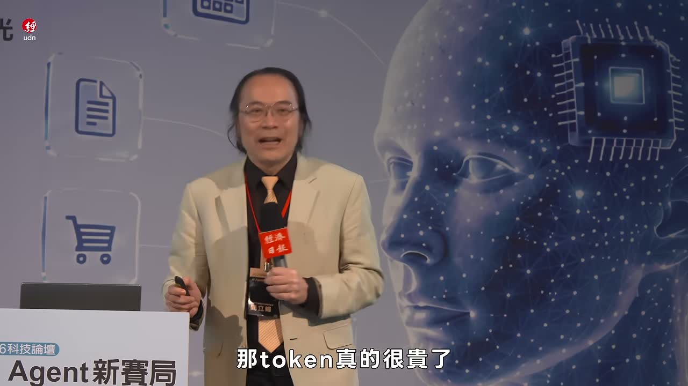
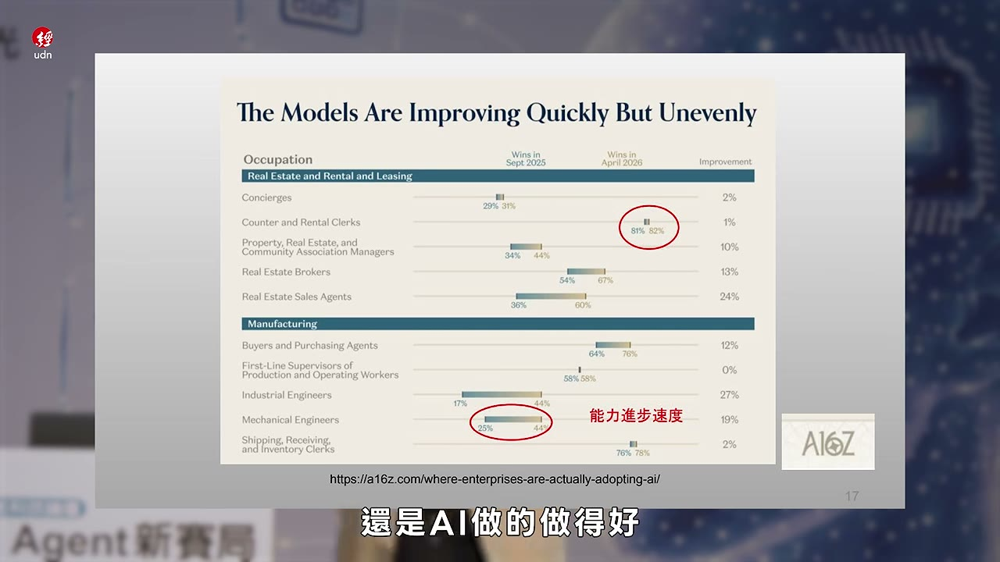
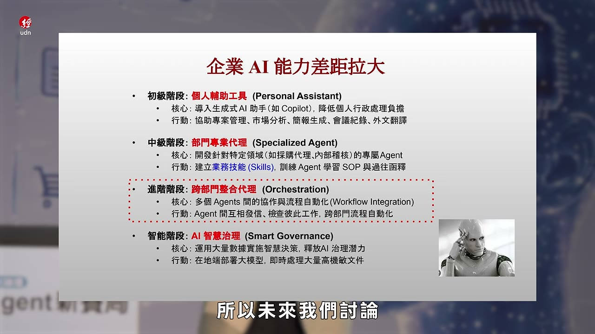
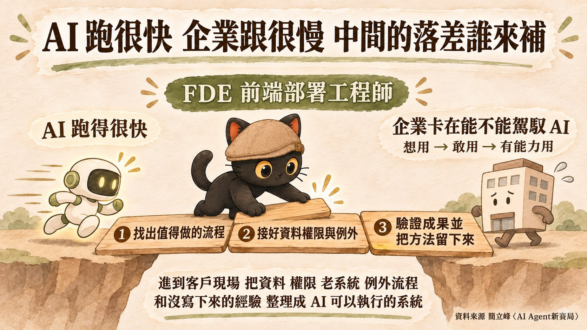

這篇在講什麼
這篇整理自簡立峰 2026 年 10 月 30 日在經濟日報 2026 科技論壇「AI Agent 新賽局」的演講〈我眼中的 AI Agent〉，再加上我自己的補充角度：AI 跑得很快，企業跟得很慢，中間有一段很大的空缺。
- 看到 AI 新聞很多，想知道台灣企業現在卡在哪的老闆與主管
- 擔心自己的工作被 AI 取代，想知道時間表的上班族
- 在公司負責導入 AI，想找到下一步做法的人
- 簡立峰說台灣薪水不高、Token 很貴，AI 打到我們的工作還早得很，這段是半開玩笑
- 他後面講的才是重點：企業卡在駕馭 AI 的能力，落地時間會拉長
- AI 和企業中間的落差，需要有人進到現場補，FDE 前端部署工程師就在做這件事
台灣人不太需要擔心 AI 衝擊？
台灣人不太需要擔心 AI 衝擊，因為我們人工薪資普遍比 Token 低。這是我聽完簡立峰演講的一句話整理，他本人的原話在下面。
他在講 AI 對金融業的衝擊時提到，5 月 5 日 Anthropic 推出 10 個金融服務 agent，Morgan Stanley 的報告說初級分析師的產值，一個 AI 可以抵 2.5 個人，全世界的投資銀行都在思考要不要裁員。為什麼是投行先動？他的原話是：

現場有笑聲，這段是半開玩笑。他接著就講了比較嚴肅的資料（26:21）：OpenAI 公布的職業能力對照，寫程式這件事 82% 是 AI 做得好，機械工程從去年 25% 拉到今年 44%。照這個曲線走，所有師字輩的工作來到八成以上只是時間問題（Matter of time）。知識靠閱讀和文字取得的工作最快，靠影像和肢體動作的慢一點，需要五感的工作像水電工、護理師可能還要 20 年。

簡立峰講的五大變革
| 時間 | 變革 | 他舉的例子 |
|---|---|---|
| 06:31 | AI 開始自主創新 | 人類資料訓練到 80 分以後，剩下的 20 分交給 AI 自己學；9 月出現 RSI（AI 能修改自己的演算法、自己提升能力） |
| 21:46 | 所有師字輩職能需要再改造 | 吳恩達說 PM 與工程師比例要從 1:20 走到 1:1；24:21 美國大型科技公司少聘新鮮人，持續聘 41 到 49 歲 |
| 27:52 | Token Economy | 比的是能不能用 AI 改造自己最核心的研發，Moderna 癌症疫苗研發縮短到六天 |
| 35:08 | 企業營運典範轉移 | 數位員工；人離職，Skills 留下來 |
| 39:03 | 台灣 AI 有大未來 | 台股已是世界第四、第五大市場；台灣不能只靠台積電與硬體製造 |
下面逐條整理他講了什麼。這一段都是他的說法，我只做整理。
變革一：AI 開始自主創新（06:31 到 21:46）
他要大家記住兩個詞：「自主」跟「創新」。
- 訓練到 80 分會卡住：一位在前沿 AI 公司工作的台灣年輕科學家跟他說，人類標註資料可以把 AI 從 60 分帶到 80 分，接著會停滯很久，唯一的突破方法是讓 AI 自己學剩下的 20 分。代價是人不知道 AI 怎麼走完最後一哩路，只能看結果。
- 長天期（Long Horizon）：以前叫 AI 代理做一件事是三秒鐘、五分鐘，現在可以給它三天，有人能給到十天、二十天。他說 AI 也因此開始闖禍，例子是打進澳洲政府的系統、差點把 Hugging Face 攻掉。
- 6 月的國安事件：有一個模型只出現幾天，美國政府就要它下架，因為它能製造國安問題。他比喻成歐本海默事件，之後每個國家都在喊主權 AI。
- 9 月出現 RSI（Recursive Self-Improvement，遞迴自我提升）：AI 能修改自己的演算法，人類負責監控。他說 Anthropic 讓 AI 自主研究之後，實驗室研發快了八倍。
- AI 開始能創造：他的定義是做人類做不到的事，例子是開場講的 722 道數學千古名題。
- 他的判斷：AI 有風險，但離失控還很遠。他引用微軟總裁的話：我們管一瓶牛奶花的力氣，都比管 AI 還多。食品、藥品、核能、飛航都有管理制度，AI 還沒有，因為來得太快。他也提到業界的囚徒困境：大家都怕別人先衝，所以都不做柵欄。
變革二：所有師字輩職能需要再改造（21:46 到 27:52）
他特別說自己用了很強烈的字：所有都需要再造。
- 軟體業：吳恩達說矽谷產品經理與工程師的比例是 1:20，未來要 1:1。產品經理自己發想、做出原型，工程師負責把它安全化完成。他的結論是工程師都要有管理能力，管理者都要有工程師的能力。
- 影視業：中國橫店 40 萬人，現在不到 1、2 萬人有工作。一個人能當導演、編劇、剪接，又會用 AI，就能大量產出。他說未來剩兩種影片，一種是手工影片，一種是 AI 影片，中間的正在減少。
- 新鮮人與資深者：大型科技公司從 ChatGPT 出現那天起少聘剛畢業的學生，已經減少 25%，持續聘的是 41 到 49 歲，因為他們比較知道 AI 哪裡會出錯。
- 金融業：就是第一段的 Morgan Stanley 報告，以及薪水與 Token 那段。
- 各職業的時間表：寫程式 82% 是 AI 做得好，機械工程從 25% 拉到 44%。知識靠文字取得的最快，靠影像與肢體動作的比較慢，要用到五感的（水電工、護理師）可能還要 20 年。他的解釋是現在的語言模型架構只適合比較單一的訊號。
變革三：Token Economy（27:52 到 35:08）
- 最後比的是研發：他說企業與企業、國家與國家最後比的，是有沒有能力用 AI 改造自己最重要的研發核心競爭力。例子是 Moderna 的個人化 mRNA 癌症疫苗，研發可以縮短到六天。新經濟要等 AI 改造舊經濟之後才會出現，他說時間還沒到，但已經看到曙光。
- 已經發生在 IC 設計：聯發科的晶片設計已經很難由人來驗證，都是機器在驗證，電路設計、材料選擇、模擬實驗也高度智慧化。他說如果台灣的資料中心沒人用，問題出在產業不需要用尖端 AI 做技術突破，很可能被彎道超車。
- Token 需求有多大：美國的算法是 24 倍，華為把每個終端裝置都算進去，算出 10 萬倍。他說兩者可能都對，也都可能高估或低估，台灣的命運就跟這張圖綁在一起。推論需求一直增加，代表供應鏈會多元化，不會只有 GPU 獨大。
- 台灣的位置：五層蛋糕裡台灣強在基礎層的硬體製造，應用端是弱的。他提醒製造業更需要用 AI，舉南韓全面擁抱 AI 生產製造為例。
- NVIDIA 的布局：用 GPU 訂單建立自己的供應鏈並投資，正在做「地球電信局」「地球電力公司」，三年做到 Google 三十年的規模。
他留給在座企業的問題：自己公司、自己產業最核心的技術是什麼，可不可以用 AI 來改造？
變革四：企業營運典範轉移（35:08 到 39:03）
- 數位員工：企業要管理數位員工，也會被數位員工管理。員工離職交接給人，那個人又走了，就交給 AI，因為 AI 不會離開。一直這樣下去，公司就是 AI 在管。他的年輕朋友說：人出去，Skills 留下來。
- 從寫程式蔓延到每個領域：現在 AI 的錢主要花在寫程式，接著會擴散。他舉美國法律業今年營收減少 20%，因為企業最敏感的就是律師費，先問 AI 可以省錢。
- 銷售 AI 代理化：Meta 的 Muse 系統出來後，網路上開始討論廣告可能要做給 AI 看，給人看的 UX 行業會很辛苦。
- 服務業都變科技業：美國大型律師樓砸 5 億、10 億美金訓練自己的模型，但公版模型進步得比專有模型還快。SaaS（Software as a Service）已經很辛苦，接下來是 Service as a Software。
- 差距拉開與治理：企業的 AI 能力會從個人工具、部門、跨部門一路拉開差距。他說分部門是因為人類能力有極限，AI 夠強時，部門就不必靠人。之後大家討論 AI 能力會變少，討論怎麼管理、管制、治理 AI 會變多。
變革五：台灣 AI 有大未來（39:03 到結尾）
- 股市：台灣已是世界第四、第五大的股票市場。他說會上上下下，下來的時候要準備好。
- 企業規模：聯發科市值排名第 61，往上是阿里巴巴、Goldman Sachs。台灣有可能有四家百大企業，他說這是台灣最好的時代，也是風險最高的時代。
- 身分轉變：台灣從想在湖邊划船的小島進了太平洋，變成資本密集國家，必須高度國際化，要學 beyond manufacturing，也不能只有台積電。
- 結尾那句：台灣孩子少到根本沒辦法裁員，所以沒有裁員問題。
真正的訊號：企業卡在駕馭能力
簡立峰在 17:25 到 19:39 說，最近所有企業不再討論 AI 的能力，他們相信它，可是都在討論自己的能力：我能不能駕馭它？從想用到敢用、到有能力用，有一段過程，落地時間會比想像中拉長。
他也提到兩個數字：
- 「能夠看到一件事下去之後自我完成的人，在台灣大概也沒有五千人」（15:55，前文講的是 Gemini Agent 企業版一個指令把整件事做完的展示）
- 大型科技公司繼續聘 41 到 49 歲的人，因為他們比較知道 AI 哪裡會出錯，有能力駕馭它（24:21）
他的企業投影片（38:51）把企業 AI 能力分成四階段：個人輔助工具、部門專業代理、跨部門整合代理、AI 智慧治理。他說企業 AI 能力的差距會越拉越大。

我想補的角度：中間的落差
AI 前面跑得很快，企業跟得很慢，中間就有一段很大的空缺，就是填補落差。
這段落差有一個職稱在做，叫 FDE（Forward Deployed Engineer），前端部署工程師。這是我自己的補充，簡立峰的演講沒有講到這個職稱。
簡單說，就是直接進到客戶現場，把 AI 接進實際工作流程的工程師。

現在 AI 模型已經很強了，公司裡還有資料、權限、老系統、例外流程，以及員工知道怎麼做卻從來沒寫下來的經驗。FDE 要把這些東西問出來，整理成資料欄位、判斷規則、人工核准點，接著動手把系統做出來並驗證成果。
要能同時懂技術、懂現場、懂專業領域，也能把人的專業判斷整理成 AI 可以執行的系統。
某種角度來說，我現在做的 AI 陪跑教練，其實很接近 FDE 的工作方式。
企業可以怎麼開始
FDE 的工作大概是三個步驟，企業自己也可以照這個順序起步：
我在 9 月也寫過：導入一堆 AI 工具很容易過時，還是要從根本整理自己企業的知識庫做起，重新規劃 AI 工作流。如果是自己摸索，那自己跟 AI 的工作日誌真的非常重要。
- 企業導入 AI 為什麼這麼難？買了工具同事都沒在用：接在這段後面讀，講工具買完之後企業內部怎麼把 AI 養起來
- 公司請 AI 顧問來陪跑，要叫全部人一起來學嗎？：先找關鍵主管把一條流程做好，再複製給其他人
想一起把 AI 接進工作流程？
我每個月有兩場免費線上講座，也在 LINE 社群分享一人公司 ＋ AI 員工的應用技巧。